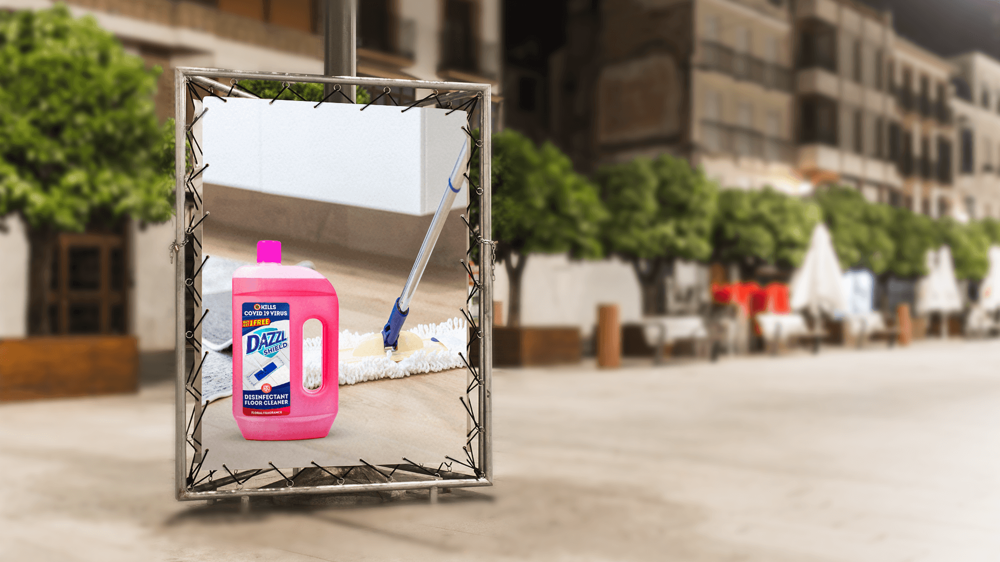
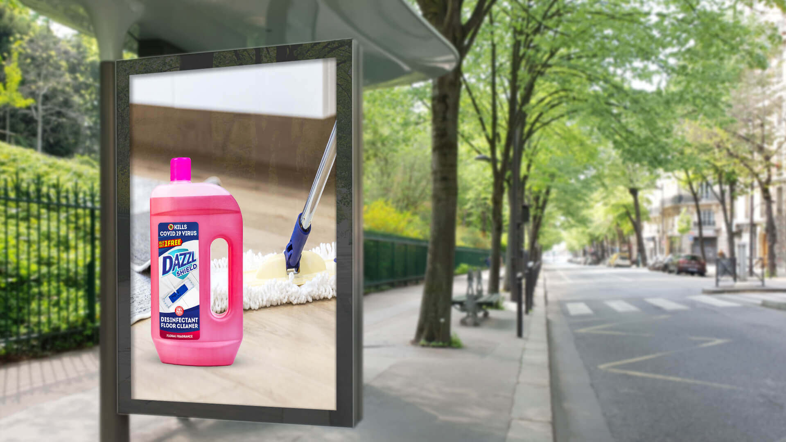

The product had to separate itself from ordinary fragrance-led floor cleaners by bringing its disinfecting role to the foreground.
← Back to workA cleaner floor.
Dazzl Shield · Floor Care
A cleaner floor.
A stronger line of defence.

Project overview
Everyday floor care.
Framed as everyday protection.
Dazzl Shield needed to look unmistakably like a disinfectant floor cleaner while communicating a stronger hygiene role than surface shine alone.
The creative pairs the product with the most recognisable floor-cleaning action: a mop moving across a domestic surface. The result is immediate, functional and built for distance.
- Product
- Floor Cleaner
- Role
- Clean + Disinfect
- Cue
- Mopping Action
- Expression
- Strong + Direct
The communication challenge
Feel protective.
Remain familiar.
Pack, action and protection cue needed to resolve quickly without overloading a format viewed from the street.
The creative device
The mop shows the task.
The pack owns the promise.
The mop head creates a directional line through the composition, making the cleaning action visible before a word needs to be read.
The vivid pack sits firmly in the foreground. Its distinctive colour and handle window establish recognition while the label carries the functional protection story.
The fast-read system
Floor. Action.
Shield.
- 01
The surface
A warm domestic floor makes the product’s role instantly relevant.
- 02
The movement
The mop demonstrates use and gives the static frame active energy.
- 03
The pack
A bold silhouette anchors the benefit and protects brand recall.
The work in context
One unmistakable action.
Two outdoor moments.
Each supplied application is shown once at its original ratio, preserving the complete product, mop and placement context without forcing the portrait creative into a crop.


The outcome
Protection you can recognise.
Cleaning you can picture.
The final system turns a routine household task into a confident protection message, with a composition that remains clear across daylight and illuminated night placements.
Category clarity
The mop and floor establish the use case without explanation.
Pack recall
The distinctive container remains the primary visual anchor.
Protection signal
The label elevates the story from cleaning to disinfecting care.
Clean the floor.Strengthen the everyday.
Need a household product made clear at a glance?